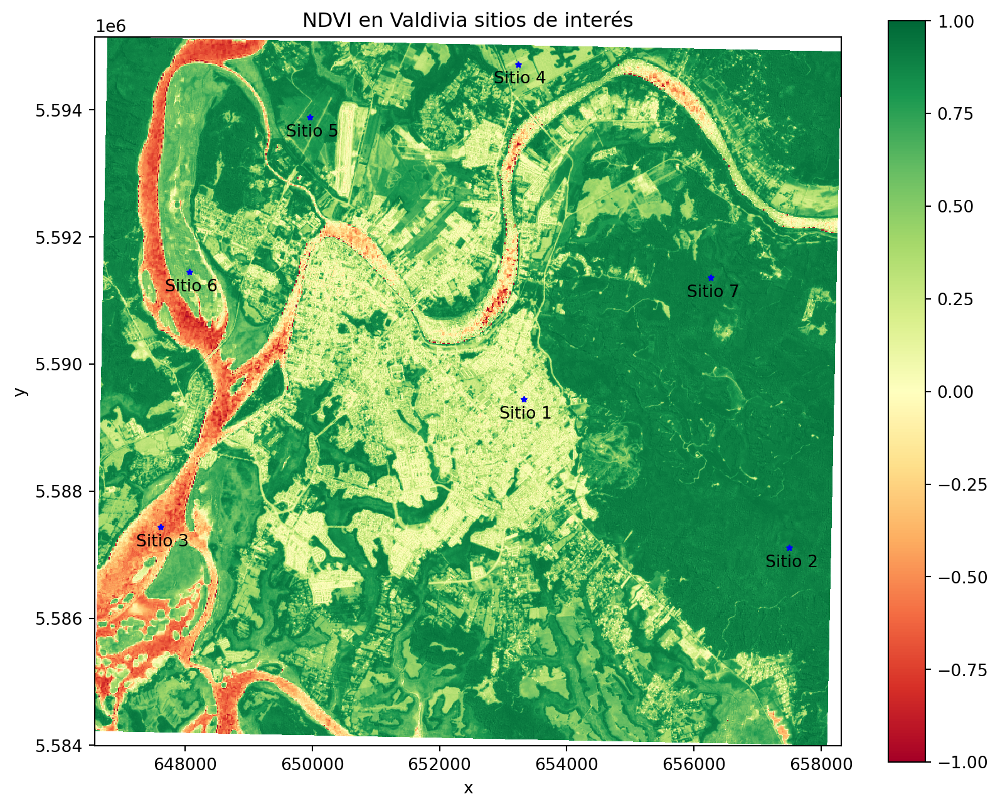
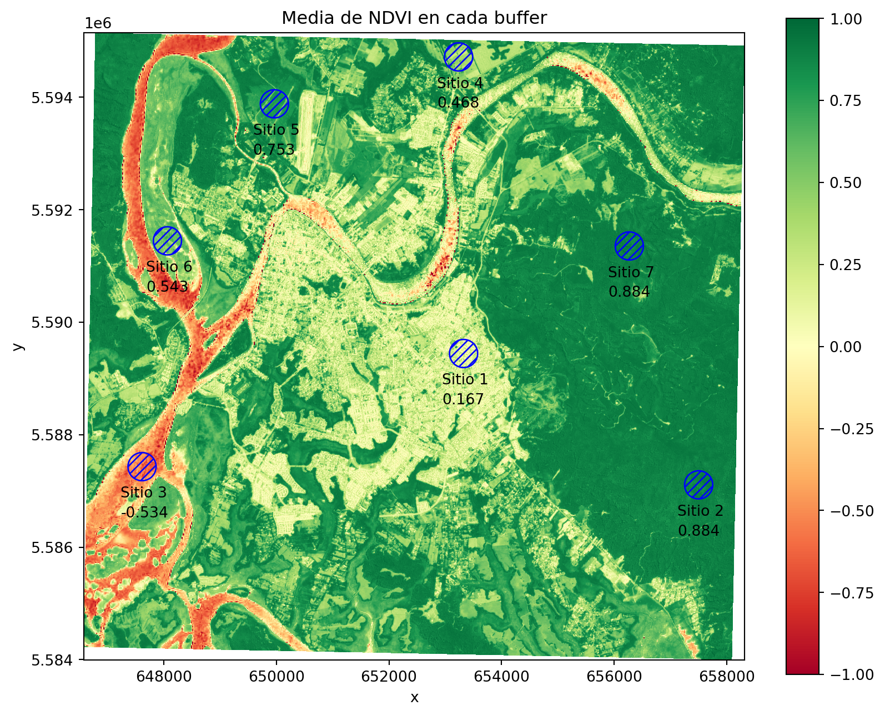
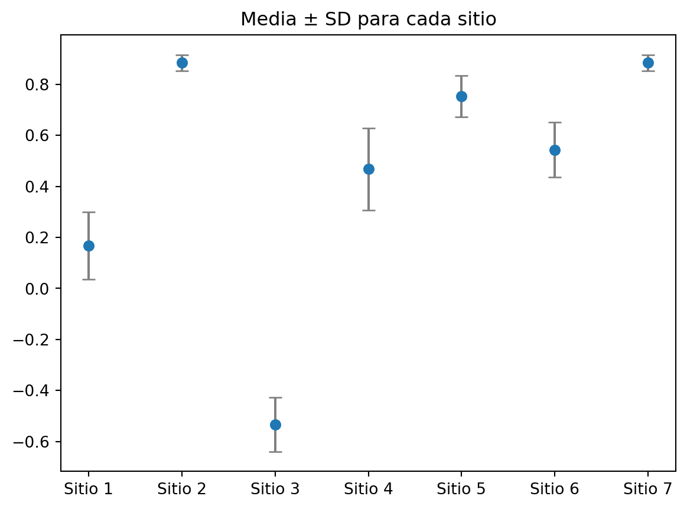

4 Análisis Temporal y Estadística Zonal
4.1 Introducción
La estadística zonal es una técnica utilizada en los Sistemas de Información Geográfica (GIS) para analizar las propiedades de los valores de un raster dentro de zonas específicas definidas por otro raster o capa vectorial. Este método implica el cálculo de estadísticas descriptivas (como la media, la mediana, el máximo, el mínimo, la desviación estándar, etc.) para los valores de los píxeles que caen dentro de cada zona. Las zonas son definidas normalmente por atributos como regiones administrativas, tipos de hábitat, categorías de uso del suelo, entre otros.
La importancia de la estadística zonal en GIS radica en su capacidad para proporcionar información detallada y contextual sobre áreas específicas, permitiendo análisis espaciales más precisos y fundamentados. Algunos ejemplos de su aplicación incluyen:
Estudios Ambientales: en un análisis de la calidad del aire, se podrían utilizar estadísticas zonales para calcular la concentración media de contaminantes en diferentes zonas urbanas, ayudando a identificar áreas con niveles de contaminación críticos.
Planificación Urbana y Regional: puede utilizarse para evaluar la densidad de población o el uso del suelo en diferentes barrios o distritos, lo que es crucial para la toma de decisiones en cuanto a infraestructura, servicios y regulaciones de zonificación.
Agricultura y Gestión de Recursos Naturales: pueden aplicarse para analizar variables como la humedad del suelo, los rendimientos de los cultivos o la topografía en diferentes parcelas, lo que ayuda en la gestión de recursos y la toma de decisiones agrícolas.
Estudios de Biodiversidad y Conservación: se pueden usar para evaluar la distribución de especies o la cobertura de hábitat en diferentes áreas protegidas o ecosistemas.
Gestión de Desastres y Respuesta de Emergencia: permite analizar el impacto de eventos como inundaciones, incendios forestales o terremotos en diferentes zonas, lo que es esencial para la planificación de la respuesta de emergencia y la rehabilitación.
La estadística zonal es una herramienta poderosa que facilita el análisis espacial detallado y contextualizado, apoyando la toma de decisiones informada en una amplia gama de campos.
En este caso, en el NDVI obtenido en el Módulo 3, calcularemos los principales estadígrafos (media, desviación estándar, mínimo, máximo y mediana) a distintos sitios dentro de la zona. Si quiere seguir el esta demostración puedeo obtener los datos en el siguiente enlace.
4.2 Dentro de Python
Código
# Importacion de librerias
import os
import pandas as pd
import rasterio as rio
import matplotlib.pyplot as plt
import numpy as np
import earthpy.plot as ep
import geopandas as gpd
import rioxarray as rxr
# Carga de sitios (puntos)
puntosAOI = gpd.read_file("puntosVal.shp")
# Cargamos nuestro raster a traves de rioxarray (para mantener atributos del raster)
valdiNdvi = rxr.open_rasterio("ndviValdivia.tif")
# Visualizacion
f, ax = plt.subplots(figsize = (10, 8))
valdiNdvi.plot(ax = ax,
cmap = 'RdYlGn',
vmin = -1,
vmax = 1)
puntosAOI.plot(ax = ax,
color = "blue",
marker = "*",
markersize = 10)
for i in range(len(puntosAOI)):
ax.annotate(puntosAOI["id"].iloc[i],
(puntosAOI.geometry.x[i] - 380, puntosAOI.geometry.y[i] - 300))
ax.set_title("NDVI en Valdivia sitios de interés")
plt.show()
Note que los sitios de interés son elementos vectoriales de tipo punto, por lo que, con ellos no es posible obtener los estadígrafos (ya que solo contienen un valor). Para arreglar esto, crearemos un área buffer de 250 metros.
La delimitación del tamaño del área buffer depende del CRS de sus capas. En este caso, debido a que las capas se encuentran en el EPSG:32718, el sistema de medida a ocupar será en metros.
Así se ven las zonas buffer creadas a partir de los puntos

Una vez creado el buffer, se extraen los valores desde el raster y se calcula los estadísticos de interes.
# Lista vacia
estadisticas = []
# For loop para extraccion
for x in range(len(puntosBuffer)):
# Se extrae el nombre del sitio
idFila = puntosBuffer["id"].iloc[x]
# Selección de la geometria
geometriaFila = puntosBuffer.iloc[[x]].geometry
# Recorte
parcelaPix = valdiNdvi.rio.clip(geometriaFila)
# Aplanamos los valores a un array de una sola dimension
parcelaValores = parcelaPix.values.flatten()
# Sacamos los NaN
valores = parcelaValores[~ np.isnan(parcelaValores)]
# Se calculan los estadigrafos
media = np.mean(valores)
mediana = np.median(valores)
sd = np.std(valores)
minimo = np.min(valores)
maximo = np.max(valores)
# Se agregan a la lista anteriormente creada
estadisticas.append({
'id': idFila,
'media': media,
'mediana': mediana,
'sd': sd,
'minimo': minimo,
'maximo': maximo
})
# Convertimos en un DataFrame
estadisticas = pd.DataFrame(estadisticas)
# Unimos nuestro gdf de buffer con el de estadisticas
puntosBuffer = puntosBuffer.merge(estadisticas,
how = "inner")
puntosBuffer| id | geometry | media | mediana | sd | minimo | maximo | |
|---|---|---|---|---|---|---|---|
| 0 | Sitio 1 | POLYGON ((653575.211 5589444.45, 653574.007 55... | 0.167249 | 0.158344 | 0.131650 | -0.200989 | 0.847045 |
| 1 | Sitio 2 | POLYGON ((657751.113 5587109.038, 657749.909 5... | 0.884141 | 0.888256 | 0.030674 | 0.764588 | 0.955374 |
| 2 | Sitio 3 | POLYGON ((647863.596 5587432.921, 647862.392 5... | -0.533523 | -0.520000 | 0.105754 | -0.865546 | -0.235294 |
| 3 | Sitio 4 | POLYGON ((653486.052 5594718.46, 653484.848 55... | 0.467598 | 0.431419 | 0.160849 | 0.199051 | 0.933968 |
| 4 | Sitio 5 | POLYGON ((650214.474 5593885.099, 650213.27 55... | 0.753121 | 0.780255 | 0.081850 | 0.382153 | 0.872004 |
| 5 | Sitio 6 | POLYGON ((648314.848 5591447.791, 648313.644 5... | 0.542913 | 0.563952 | 0.108113 | -0.037657 | 0.771179 |
| 6 | Sitio 7 | POLYGON ((656519.267 5591356.813, 656518.064 5... | 0.884160 | 0.886569 | 0.031950 | 0.768481 | 0.973029 |
Finalmente podemos visualizar nuestro resultado.
Código
fig, ax = plt.subplots(figsize=(10, 8))
valdiNdvi.plot(ax = ax,
cmap = 'RdYlGn',
vmin = -1,
vmax = 1)
# Etiquetas
for i in range(len(puntosBuffer)):
# Nombre
ax.annotate(puntosBuffer["id"].iloc[i],
(puntosAOI.geometry.x[i] - 380, puntosAOI.geometry.y[i] - 550))
# Media
ax.annotate(round(puntosBuffer["media"].iloc[i], 3),
(puntosAOI.geometry.x[i] - 380, puntosAOI.geometry.y[i]- 900))
# Buffer
puntosBuffer.plot(ax = ax,
edgecolor = "blue",
facecolor = "none",
hatch = "////")
ax.set_title("Media de NDVI en cada buffer")
plt.show()
Código
fig, ax = plt.subplots()
ax.scatter(x = puntosBuffer["id"],
y = puntosBuffer["media"])
ax.errorbar(
x = puntosBuffer["id"],
y = puntosBuffer["media"],
yerr = puntosBuffer["sd"], # Barra de error ± 1 desviación estándar
fmt = 'o', # Marcador para los puntos
ecolor = 'gray', # Color de las barras de error
capsize = 4) # Tamaño de las líneas en los extremos de la barra
ax.set_title("Media ± SD para cada sitio")
plt.show()
Ejercicios
Obtenga un gráfico de caja y bigotes (boxplot) para cada sitio.
Con el siguiente set de datos obtenga el NDVI promedio para el fundo El Desprecio. Este fundo … . Los datos consisten en 9 imágenes Landsat desde septiembre de 2016 a septiembre 2017. Todas las imágenes tienen 4 bandas, (R, G, B y NIR).